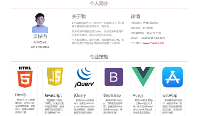
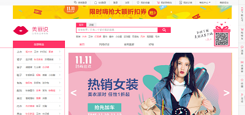
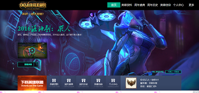
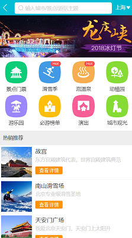

-
- Educational.教育背景
- 学历: 2015-9~2019-6 周口师范学院 网络工程专业（统招本科）
- 主修课程：网页设计，计算机网络，计算机组成原理 , 数据结构 ，线性代数 ，无线网络技术 ，组网技术, C ，Linux ，Mysql ，Oracle等
-
- Experience. 项目经验
上线项目
-
上海依蓝地毯有限公司官网
官网地址: www.yilandt.com
由老师组建的团队，1前端+3后台，配合完成整套网站的开发与上线
本人独立完成UI+前端的开发工作，主要使用Html5+Css3，Javascript，BootStrap，jQuery来完成响应式布局， 并配合后端PHP成员完成数据对接，整合上线，测试维护等一系列工作
-
吴俊杰的个人博客
官网地址: www.wujunjie.xin
独立完成个人博客的设计与编写，服务器搭建与项目上线，熟悉整套网站的开发流程及维护
运用了wordpress的二次开发技术，快速搭建个人博客，操作Linux服务器，配置网站需求，完成上线。
个人项目
-
我的在线简历 预览
一个优雅简洁的在线个人简历，使用Bootstrap完成响应式布局，将个人能力及项目经验在线展示出来 技术栈：Bootstrap , jQuery ，artTemplate , iScroll
 -
仿美丽说官网首页 预览
结合W3C标准规范，仿美丽说官网首页，熟悉电商网站布局技巧，提高写代码熟练度和代码规范 技术栈：HTML 5 ， CSS 3 ，jQuery
 -
仿QQ TIM首页 预览
结合视频教程及W3C规范，仿QQ TIM主页，用Stellar.js制作视差滚动效果,练习Stellar插件的使用方法 技术栈：jQuery ，Stellar

-
仿英雄联盟首页 预览
利用大二的暑假，在学校和老师学习的课余时间，仿英雄联盟官网整合了一些炫酷的特效，获得学校网页设计大赛一等奖 技术栈：H5+Css3，Javascript，jQuery
 -
H5+C3+fullpage大屏滚动 预览
根据在线文档和W3C规范，使用fullPage插件，大量使用Css3中的动画结合jQuery完成大屏滚动效果。 技术栈：jQuery ，fullpage
-
Vue仿去哪了app主页 预览
结合视频教程及Vue官方文档，通过仿去哪了app主页熟悉了vue的常用Api，了解了vue的生态系统，能灵活使用vueRouter,vueX,Axios进行业务需求的开发 技术栈：Javascript，vueRouter，vueX，webpack，stylus

-
- Skill. 技能清单
-
Html+Css
熟悉H5+Css3的新增内容，会Photoshop的简单使用，能配合UI，根据Psd高度还原设计稿
能实现较复杂的页面布局和Css3动画，能正确处理浏览器兼容问题
熟悉Http协议，Web标准及Less/Stylus Css预处理工具
-
JavaScript
有良好的JS基础，对面向对象编程有自己的理解，能使用原生JS实现业务需求，进行模块化开发
熟悉Ajax及跨域的处理方式
熟悉jQuery的Api及Animate.css,fullpage.js, Stellar.js等插件的使用，能够根据需求封装JQ插件
-
Bootstrap
熟练使用Bootstrap进行响应式界面的开发，并能根据需求，使用Less定制Bootstrap，高度还原设计稿
-
Mobile
熟悉移动端开发技巧，Flex及Grid布局，能根据不同设备编写兼容代码，达到完美的用户体验
-
Vue
熟悉vue的常用Api，了解vue的生态系统，能灵活使用vueRouter,vueX,Axios进行业务需求的开发
了解 Webpack的配置，能使用element-ui，mint-ui和mui进行快速开发
更多
-
熟悉常用的Linux命令，对Mysql数据库能进行简单的增删改查
熟练使用Git（码云）配合vscode快速编写代码
了解微信小程序/公众号的开发，上线及运营
了解PHP,Node后端的基础知识，能配合后端人员完成数据绑定

吴俊杰
" Speak less and do more"
-
- Basic info. 基本信息
- 798595965
- 18697737169
- 798595965@qq.com
- 出生日期：1996-03-02
- 现居住地：杭州余杭区
-
- Application. 应聘岗位
- Web前端开发
-
- About me. 关于我
2年web前端学习，16年大一专业课入门，连续两个暑假在校和老师边学习，边做项目。
作为与用户最接近的Coder，会多方面考虑用户的需求及体验，追求完美的人机交互。
个人性格随和，善于沟通，逻辑清晰，喜欢一些新事物，新技术，有强大的自我调节能力。希望在给贵公司创造价值的同时提高个人修养！